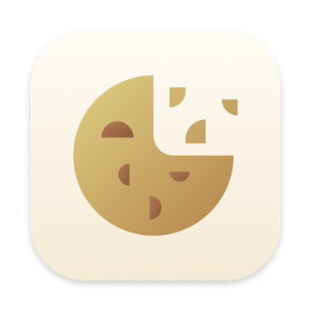

Включите расширение CookieAway в Настройках.
Включите CookieAway в Safari → Настройки → Расширения.
CookieAway включён. Выключить его можно в Safari → Настройки → Расширения.
CookieAway выключен. Включите его в Safari → Настройки → Расширения.